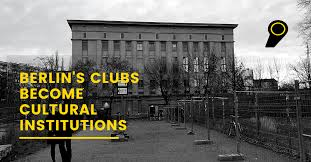

Our firm image
.jpg)
2nd pic
3rd pic
.jpg)
Festivals are to Indian culture what spices are to Indian cuisine, the most important forms of celebrations! One of the main reasons why diversity, thy name is India, is such a famous line is because of the gusto and enthusiasm by which we celebrate all famous festivals in India. Be it ringing in Christmas or lighting up the halls with diyas in Diwali, each and every festival in India is welcomed with big celebrations and unison of cultures.
The greatness of India’s culture can be found in its festivals. The vivid and vivacious festivals of India depicts the greatness of our Indian culture. Indians celebrate festivals with sheer enthusiasm and devotion. India is a country that is appreciated and comprehended as a plethora of festivals are celebrated here.
A cultural institution or cultural organization is an organization within a culture/subculture that works for the preservation or promotion of culture. The term is especially used of public and charitable organizations, but its range of meaning can be very broad. Examples of cultural institutions in modern society are museums, libraries and archives, churches, art galleries.
GLAM is an acronym for "galleries, libraries, archives, and museums",[1][2] and refers to cultural institutions with a mission to provide access to knowledge. GLAMs collect and maintain cultural heritage materials in the public interest. As collecting institutions, GLAMs preserve and make accessible primary sources valuable for researchers. The term, in particular in related forms such as LAM is increasingly used for the comparative studies of these institutions, often motivated by their claimed convergence.
Galleries, Library, Archives, and Museums) is a term that has gained popularity since 2010 to describe an initiative,[13] network and movement that supports exchange and collaboration between cultural institutions supporting open access to their digitised collections. The GLAM-Wiki Initiative helps cultural institutions share their openly licensed resources with the world through collaborative projects with experienced Wikipedia editors.